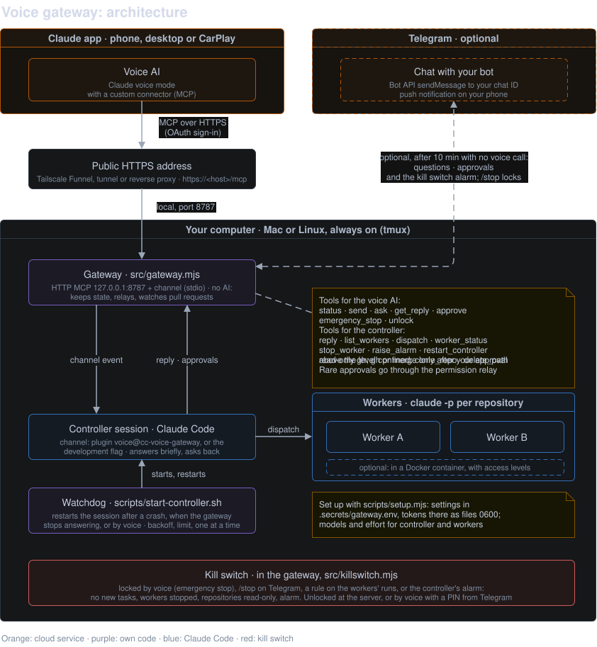

Your agents shouldn't stop when you leave the keyboard.
Claude's voice mode is a great partner to think out loud with, but it can't reach Claude Code, the agent that does the real work in your repositories. In the Claude app, Claude Code only has dictation. cc-voice-gateway is the bridge: Claude's voice mode calls it as a custom connector, and it passes your request to Claude Code on your computer.
01Voice control
Talk instead of type. Wherever you are.
Claude's voice mode becomes the front end of your Claude Code sessions. It understands you in any language and keeps the context; the answers are written to be heard: short, the result first, no code, no file paths, no URLs.
In the car
With CarPlay or Android Auto, wherever the Claude app offers voice mode. Ask on the way to work; the pull request is ready when you arrive.
At your desk
Keep a voice conversation running in the Claude app while you go on working with mouse and keyboard. Delegate the chores without leaving what you are doing.
On the go
On a walk, at the gym, between two meetings. Research, drafts and calculations go to a work folder of their own; the files wait at your desk.
02Orchestration
Three layers of AI. One conversation.
You talk to one assistant. Behind it, three layers of AI split the work, each doing what it is best at, so that the conversation stays short and the work gets done properly.
Voice AI
- Listens and understands, in any language
- Passes your request to the controller
- Reads the answer aloud, and the news that came in
Controller
- Keeps the context across all your requests
- Dispatches, queues and stops the workers
- Asks back when something is unclear
- Sums up results in two or three spoken sentences
Workers
- Change the code and run the tests
- Commit on a branch, open a pull request
- Report back when they are done
03Parallel workers
Several workers. At the same time.
Say the next task while the last one is still running. The controller decides where it goes, and the gateway keeps them from stepping on each other.
- Across repositoriesEach repository has its own worker; two run at a time by default, more if you allow it.
- Side by side in one repositoryFurther runs work in git worktrees of their own, rebase before they push, and resolve conflicts themselves.
- Work folders for everything elseResearch, a calculation, a draft: a task without a repository gets a folder of its own.
- On your computer, or in DockerIsolated containers with a GitHub token that sets what they may publish.
- A queue that keeps goingWhat can't start yet waits, starts by itself, and survives restarts.
04It comes back to you
Nothing gets lost after you hang up.
Work takes minutes, conversations end. The results, the questions and the reviews find their way back to you, in a sentence or two.
- Results as spoken newsThe controller sums up what a worker did, and you hear it in your next conversation.
- Questions follow you to TelegramOnce the call has ended, a question or an approval that needs you is pushed to your phone. Results wait for your next call.
- Pull requests followed upChecks and reviews become news; review comments get fixed and pushed, round after round.
- “What is open?”Every open decision, queued task and running worker in one answer, with reminders for what you haven't answered.
- Follow along if you likeWith Remote Control, the controller's session shows in the Claude app, on an iPad for example.
05Safe by design
You stay in control of what lands.
Built on the assumption that any text a worker reads may try to trick it. The important guarantees live in the gateway's code, not in a prompt.
Pull requests, not surprises
Every change lands on a voice/ branch as a pull request, and CI, code owners and review bots run as usual. You review it at your desk.
A merge needs your yes, twice
Claude asks back with the title and the method; then Claude Code asks for an approval, which you give by voice.
Only your words start work
Workers start only on words from your recent voice request, never on text that a pull request, a review or a web page brought in.
Isolation you choose
Workers on your computer, or in Docker, where the GitHub token decides: local commits only, pull requests, or also a direct push.
A confined controller
By default it may read its own folder and the status of pull requests; a hook blocks every other tool. Two higher levels are yours to choose.
A locked front door
Sign-in only with a pairing code from your computer, the endpoint only for Anthropic's addresses, and an alert on Telegram for anything odd.
What you can say
Ask, delegate, follow up.
Name the repository the way its folder is called, or none for a task of its own. Start with “Ask Claude Code …” or “Tell Claude Code …”; within a conversation, follow-ups go there by themselves.
Get started
Your computer does the work.
Everything runs on a Mac or Linux computer of yours that stays on. A setup assistant walks you through the keys and settings; the technical README has every step.
Clone and set up
Install the dependencies and run the setup assistant, a temporary page that writes the settings and starts the controller.
node scripts/setup.mjsConnect the Claude app
Publish the gateway over HTTPS, add it as a custom connector, and sign in with an eight-digit pairing code from your computer.
Talk
Open voice mode with the same account and try it:
“Ask Claude Code whether the gateway is up.”- The Claude app with voice mode and custom connectors
- Claude Code, with channels, a research preview
- A Mac or Linux computer that stays on, with Node.js 20 or later
- A public HTTPS address, for example with Tailscale Funnel
- The GitHub CLI and tmux
- Optional: Docker for isolated workers, a Telegram bot
Under the hood: the architecture

More diagrams, from a single request to the security design, are in the technical README.
Driving comes first.
Keep your full attention on the traffic, not on the conversation or the work. It is built so that you can, at any moment: open items and unanswered questions are kept, and when you come back, ask for the status and everything is listed, brought up to date and followed up.
Use it at your own risk, and only where it is safe and legal. Follow the traffic rules and laws where you drive, including those on phone use. The authors accept no liability for accidents, injuries or damage of any kind arising from its use.
A prototype, provided as-is.
cc-voice-gateway is solely a prototype of an idea: a way to use Claude Code from Claude's voice mode, which cannot reach Claude Code on its own. It comes without warranty and without support, and there is no communication of any kind about this project: no announcements, no support, no answers to issues or messages. It is not an Anthropic product.
You use it at your own risk. No liability is accepted for accidents, injuries or damage of any kind arising from its use; see sections 7 and 8 of the Apache License 2.0.